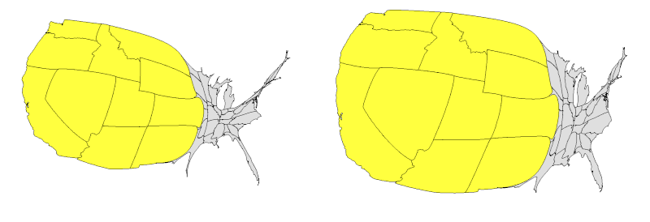

This page explains the command-line options for cartogram.pl.
The program accepts a large number of command line options. The following is a summary of them. Options are indicated by the "-" character, even in the Windows version. Options are processed in the order presented. If two options conflict, the second one overrides the first (no warnings given). Error checking on values is spotty, at best.
-help
Print a list of all of the command-line options.
-options filename
Read options from the named file.
Each line of the file looks like one command-line option:
-type contig
-data foo.data
-map bar.map
and so forth. The file can contain comments: everything following the first appearance of a "#" character on a line is ignored. The -options option may appear more than once. The named file is processed at the point in the command-line sequence where it appears. Values in the options file(s) may be overriden by subsequent command-line options.
-type string
Specifies the type of map to be generated.
Allowed values are "flat", "contig", "noncontig", and "prism".
-data filename
The file from which the thematic data is read.
See the "A Small Example" link in the navigation panel
for a description of the data file.
-area
Flag that indicates the data files are not densities,
and that each value should be divided by the area of the named entity.
-generate
Flag that indicates maps based on the contents of the data file
should be generated.
The generated maps will be named
generate/states.map and
(if there are county identifiers in the data file)
generate/counties.map.
If the -mesh option is used (see below), the files
generate/states.mesh and
generate/counties.mesh
will also be generated.
-project string
Specifies the target projection type used when generating maps.
Allowed values are
"aea" for the Albers equal area conic projection (the default),
"laea" for the Lambert azimuthal equal-area projection, or
"none" to leave the coordinates in longitude-latitude form.
-correction number
The number specifies a correction to the central longitude used
in the Albers or Lambert projection.
Because of other adjustments that are made,
the effect is to rotate the map projection in one direction or the other.
Sometimes a slight adjustment makes the map more attractive.
-lon_scale number
Longitude values are multiplied by this value before the projection, if any, is applied.
Maps using longitude and latitude tend to appear "stretched" from east to west.
A value less than one can offset that;
a value greater than one will make it worse.
Silently truncated to values in the range 0.25–4.
-map filename
The fle from which the map data is read.
See the "A Small Example" link in the navigation panel
for a description of the data file.
If generated maps are being used,
the option will look like this example:
-map generate/counties.map
-img_type string
Specifies the format of the output file.
Allowed values are "png", "jpg", and "gif" for
compressed PNG, JPEG, and GIF formats respectively.
Prism maps will always be in PNG format regardless of this option.
-video string
The flag indicates that one of the built-in video-clip capabilities
should be run.
The first capability is so show a flat map morphing into a contiguous cartogram.
Individual frames for the video will be generated into the video subdirectory.
The frames will be combined using the ffmpeg program
into a video clip in the file cartogram.mp4.
In this case,
the string specifies the frame size of the video clip.
An absolute size is specified using a wxh notation,
with w the width in pixels and
h the height in pixels.
Aspect ratio may not be preserved.
A relative size is specified by giving a floating point value
between zero and one.
The number must include a decimal point.
Finally,
a keyword may be used:
"full" is equivalent to 1.0,
"half" to 0.5, and
"quarter" to 0.25.
For the prism map,
the string may be the keyword "grow" or "rotate".
The former will result in a clip that shows
the prisms in a prism map "growing"
from zero to their actual heights.
The latter will show the prism map rotating one full revolution
so that it can be examined from different perspectives.
-background color
Specifies the color of the background for flat maps and
contiguous and noncontiguous cartograms.
Colors may take one of two forms.
Named colors are
"white",
"black",
"red",
"green",
"blue",
"purple",
"yellow",
"orange",
"gray", or
"dark_gray".
Colors may also be specified as an RGB triple of the form "num,num,num"
where num is an integer between zero and 255.
The triple string must not include any white space.
Other options that take a color value use this same structure.
-scale value
Specifies that the image size should be scaled up
(or down)
using the specified value.
Applies only to flat, contiguous, and non-contiguous cartgrams
(see -width and -height options for prism maps).
By default,
cartograms are scaled such that the larger of the two dimensions
is set to be 1000 and
the other set to maintain proper proportions.
The scale factor is set to produce larger maps.
Typically this will be a value like 1.5
used to produce a larger map
that can be rescaled in order to provide an anti-aliasing effect.
Increasing the scale will also increase the computational effort required for
contiguous cartograms,
increasing the run time and memory consumption significantly.
-offset value
The value specifies the amount of white space appearing around the map.
Applies only to flat, contiguous, and non-contiguous cartograms.
The primary use of an increased offset is to provide space
for parts of a contiguous cartogram to expand.
Without an adequate buffer,
the gas diffusion algorithm used will be constrained by the edge of the image.
Larger offset values
somewhat increase the time and memory used in calculating contiguous cartograms.
-thick value
The value specifies the thickness of the lines used to outline
the map polygons.
For flat, contiguous, and non-contiguous cartograms the units are pixels.
For prism maps,
the units are the radius of the sphere used to sweep out the outline.
For flat, contiguous, and non-contiguous cartograms
values of two or three are appropriate.
For prism maps,
values around 0.6 seem to work well.
-edge value
For contiguous cartograms,
long straight polygon edges can be a problem
after they are transformed.
If a polygon edge is longer than this edge value,
the polygon edge will be subdivided into a number of shorter edges
to improve the post-transform appearance.
Units are in image pixels.
-scale_data
Flag indicates that thematic data should be scaled
when used in a non-contiguous cartogram.
Post processing,
the largest thematic value will be 100.
Other values are scaled proportionately.
-no_unlink
Flag indicates that the various working files should not be deleted
at the end of the run.
-use_existing
Flag indicates that the working files previously generated by the cart program
(see -no_unlink)
should be used
instead of calculating new results.
This can result in significant time savings
when all you want to do is mess with the appearance of the cartogram
(colors, line thicknesses, etc).
-adj_outside_density value
The gas diffusion results for contiguous cartograms
are affected by the initial density value assigned to points
outside of the map polygons.
The density used for those points is an average density value
based (loosely) on the polygons,
multiplied by the adjustment value specified by this option.
The default value is 1.0.
Specifying a lower value
(less than 1.0)
will allow the cartogram more freedom to bulge out into the surrounding space
(see also -offset above).
Specifying a higher value
(greater than 1.0)
will force the cartogram to do more of its bulging in an interior fashion.
Value is silently trunctated to the range 0.1–3.0.
The different cartograms shown here result from adjustment values of
1.2 (on the left) and 0.5 (on the right),
all other values being held constant.

-mesh filename
The mesh lines in the named file
will be drawn on top of the polygon images
(see the "Some History" page for an example of using a mesh).
It may be possible to build a mesh file by hand,
but I've never tried.
The -generate option will produce appropriate mesh files as needed.
In that case,
the name of the mesh file name will look like generate/counties.mesh.
All of the mesh options apply only to flat and contiguous cartograms.
-mesh_size value
Sets the number of vertical and horizontal lines that make up the mesh.
Silenty truncated to the range 25–400.
The default value is 100.
-mesh_thick value
Sets the thickness of the lines used to draw the mesh
(see -thick above).
Silently truncated to the range 1–10.
-mesh_color color
Sets the color used to draw the mesh lines.
-one_color color
Specifies a single color
to fill the polygons
in flat and contiguous cartograms.
Overrides any colors that are included in the data file.
-overlay filename
Specifies a map file to be used for the cartogram overlay.
-overlay_thick value
Sets the width of the lines used to draw the overlay lines
for flat, contiguous, and non-contiguous cartograms.
For prism maps,
specifies the radius of the sphere used to sweep out cylinders
used to draw the overlay.
-overlay_color color
Sets the color used to draw overlays.
-cartv
-cart2v
cart program
used in contiguous cartograms.
The alternatives use less memory
at the cost of speed, or accuracy, or both.
-fg color
-camera_type string
Specifies the type of camera used for prism maps.
Allowed values are "perspective" and "orthographic".
-camera values
Specifies three comma-separated numeric values that determine
the camera position for prism maps.
Think of this in terms of a sphere
with a center at the center of the scene
whose equator coincides with the plane on which the map prisms sit.
No white space is allowed in the values string.
The first number is the radius of the sphere.
The second is a longitude,
given in degrees,
with zero designated as due east from the center of the map.
The third is a latitude above or below the equator,
given in degrees.
The default values are given by the string "1200,270,45".
Negative values are allowed for the latitude and longitude.
-zoom number
The number is an angle that specifies the width of the field of view
for the camera,
in degrees.
The default is 45.
-ypoint number
The camera normally points at the center of the scene,
coordinates <0,0,0>.
This number is added to the y-coordinate
of the camera aiming point.
The practical effect is to shift where the prism map appears
in the view:
positive numbers shift the map down,
negative numbers shift the map up.
-height number
-gamma number
Changes the gamma value given to POV-Ray.
Typical values would be between 0.5 and 2.0.
Larger numbers result in darker colors.
The default is 1.1.
-transform string
Sometimes there may be a need to transform the density values
for some reason.
(Eg, if generating a bunch of images that all go into a video clip.)
The -transform option allows the user to specify a chunk of Perl code
that will be executed.
The density value to be changed is assumed to be in $value;
the maximum over all density values is in $max_value;
other global variables are also available.
Yes, this can be dangerous stuff.
An example of an expression is
-transform ($value > $max_value/3) ? $max_value/3 : $value
This particular expression truncates large values. In a prism map, this results in making differences between smaller values more apparent.
-no_adj_max
For a contiguous cartogram or prism map,
don't adjust the maximum density value after the transform step is applied.
The default is to adjust the maximum density value post-transform.
-adj_max_noncontig number
The number here is a multiplicative scaling value for the density values used for
noncontiguous cartograms.
This option is here for historical reasons;
it's probably better to use the -transform option to process the density values.
-transparency value
Making the prisms somewhat transparent often results in a more attractive map.
This value specifies how transparent they should be.
The default value is 0.4.
Next: To Do List
Last updated Feb 23, 2018